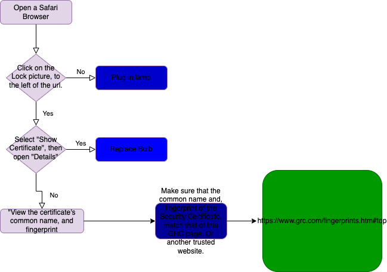

Fingerprints
Ever since the dawn of the internet, growths in size, power, and efficency have been well evident, especially in secuirty. But this trust in security, may be more misleading than true. For example, HTTP's moving to HTPPS which claim a more "secure connection". The two primary purposes of a secure HTTPS connection is to encrypt data from the user, and to encrypt and protect data from the website. These face some oppostion from hidden enemies, and some more public and open.
HTTPS Proxy Alliance is a type of technology that allows companies, private insitutions, schools, and colleges, to be able to filter through user data and information, instead of the encrypted information passing through the servers undetecded. The reason for these Proxy Alliances, is because these groups-schools and companies- were growing frustrated with the information on their internet being secure and hidden from them. Other scams and attacks can from from the dark, such as a Man-in the Middle attack, or a MITM.
A man in the middle is a fradulant third-party that is able to disrupt the assumed connection between the user and the web site. This man in the middle, is able to collect data because the fradulant Security Certificate is able to establish trust between the user and the server. This holds a great risk potentially involving data theft, information theft, and personal information being leaked.
Certificate Authorities, CA's, are organizations that meet with web sites in person and validate their credibility. If the CA finds the website trustworthy, they will give them a certificate which when placed on the website give them website credibillity and trust at the stake of the Certificate Authority. This allows web browsers to be able to trust websites that are able to get certain certificates from trusted CA's, according to each browser.
Some of the information in certificate's of secuirty are long unlaconic rolling waves of numbers and codes.
A hash is a algorithim or program that is able to take a Secuirty Certificate and compress it down into a smaller fingerprint, but still hold the information. These are useful in comparing fingerprints of a user and website, rather than looking at all of the contents of a certificate. A good hash is able to equally distribute the informatio of a certificate, and is able to fully distirbute with no errors.
Comparing fingerprints can show if your connection is truly secure.
SSL interception cannot be prevented due to the user's inability to acsess the website's and personal computer's certificates. Although this interception of data can't be prevented, it can be detectded, by comparing fingerprints.
Certifiate's can be faked, as can fingerprints, but key's can never be copied.
Although a con SSL connection with a fradulant Certificate may have acsess to the flow of information, it will never have the same private key, meaning that the public key used to encrypt will always be different from the private key, and the private key will always be different from the orginial private key used. Because of this, on your browser you can check, quite simply, to see if your fingerprint matches the fingerprint of the Secuirty Certificate.
It is important to know that some exceptions may arrise when comaparing authentic fingerprints. For example, a false positive, deriving it's meaning from other false positive tests.
Large websites, like google or bing, have many valid security certificates to deal with the large amount of information flow that happens across their internet. Many different, but valid, security codes and certificates means that there will be many different valid keys comparing user to user. For example a computer in Philidelphia may have a different fingerprint than that of a computer across the street, which could lead the two users in beliving that one of their data was being intercepted.
Yes, although viewed as sketchy, any organization that gives you internet acsess is able to establish a false connection and view your data and information that is being transmitted across the internet. They can do this by installing a HTTPS proxy alliance on your computer.
The flowchart below shows the steps to checking to make sure your fingerprint is authentic.

Works Cited
div.a {
text-indent : 50px;
}
p {
text-indnet : 50px;
}
Steve Gibson, G. I. B. S. I. O. N. R. E. S. E. A. R. C. H. C. O. R. P. O. R. A. T. I. O. N.(n. d.). GRC : SSL TLS HTTPS web
server certificate fingerprints . GRC | SSL TLS HTTPS Web Server Certificate FIngerprints . Retrived August 25,
2022, from http://grc.com/fingerprints.htm#top
Github. Github - Coder Merlin (n. d.) Retrieved August 25, 2022, from http://www.codermerlin.com/wiki/index/php/Github
Mr. Ben-Yaakov